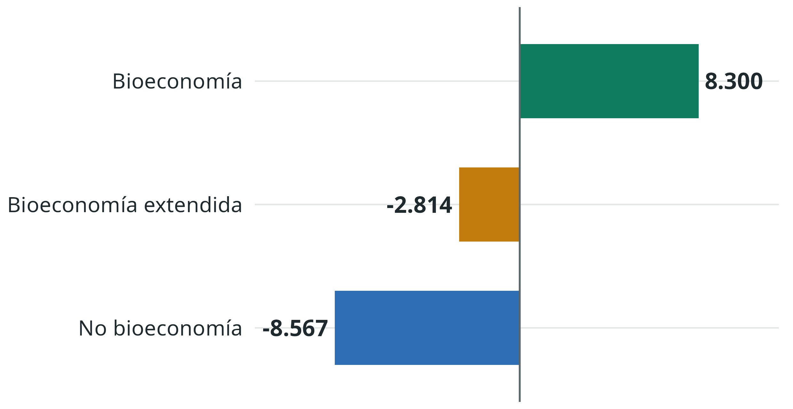
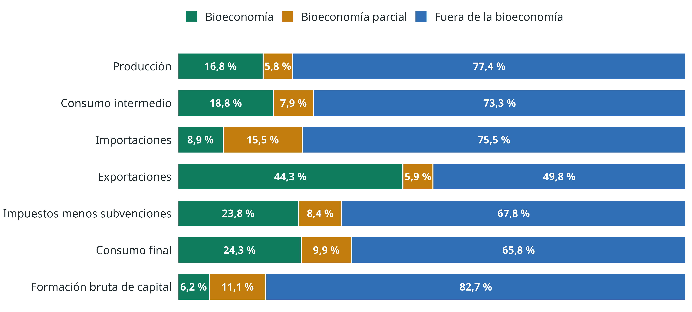
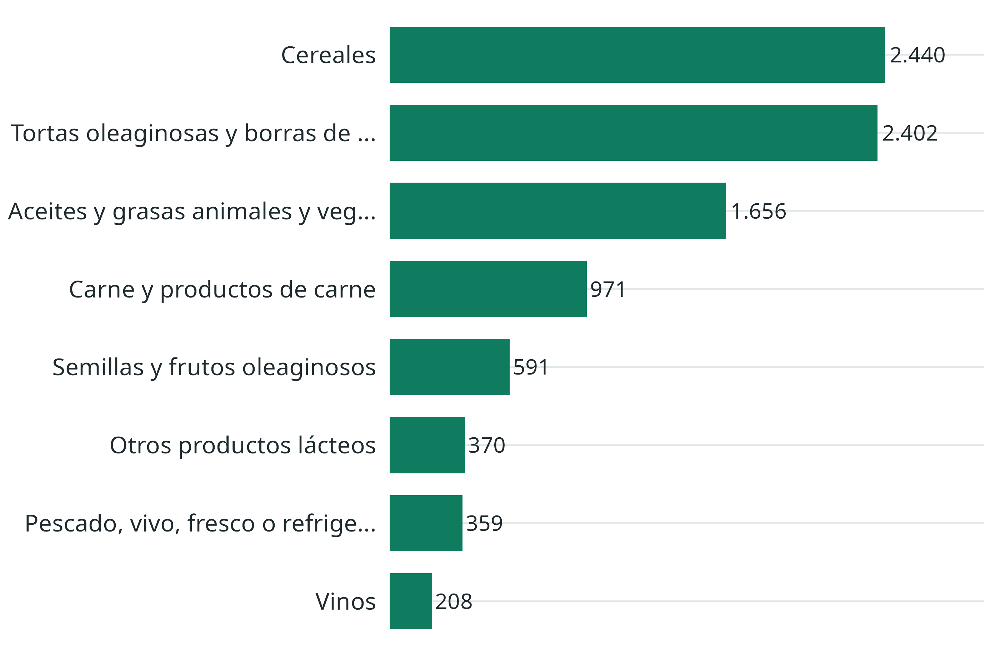
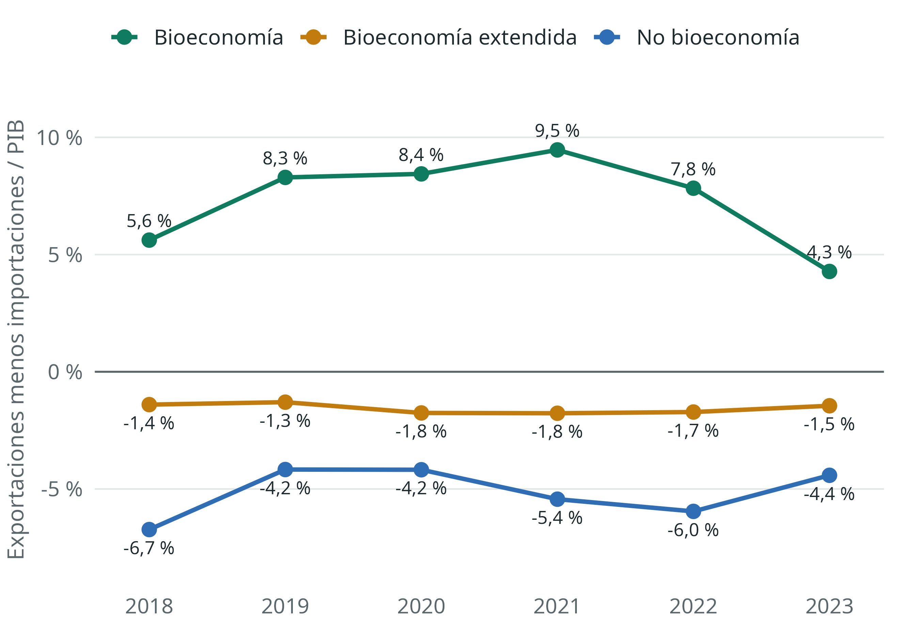
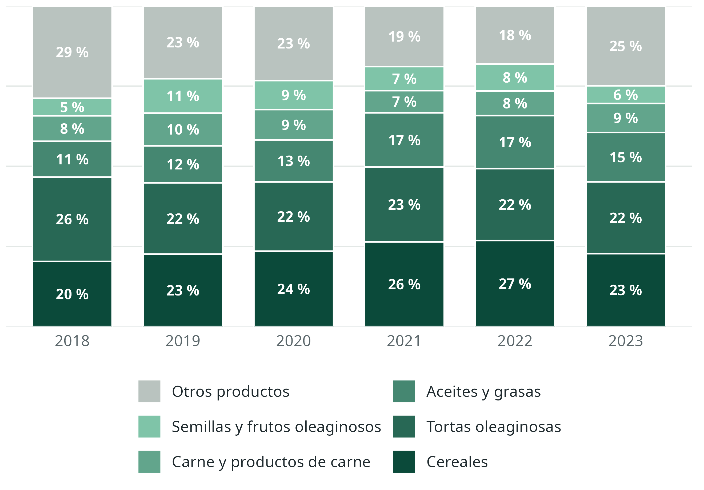
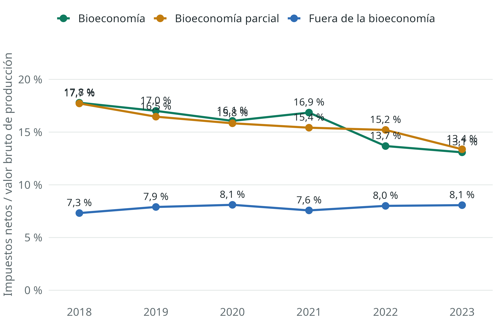
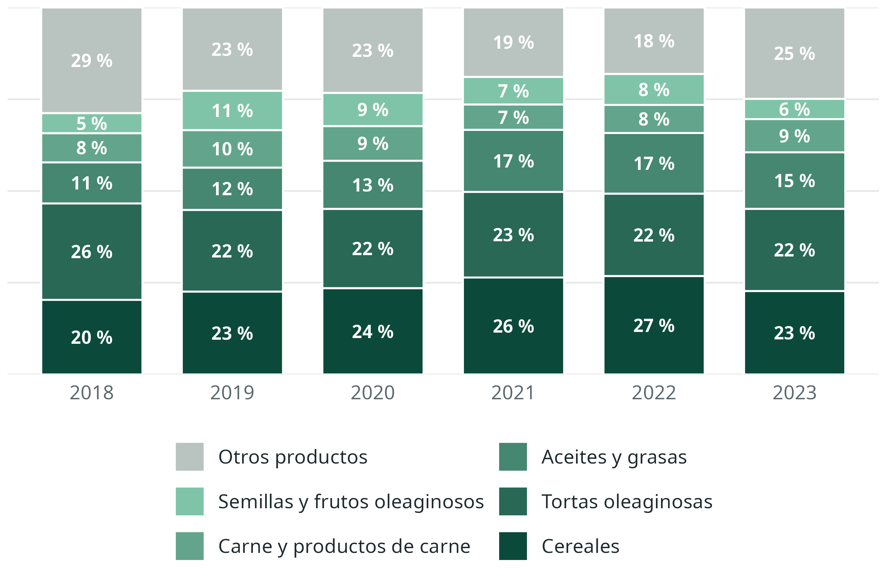
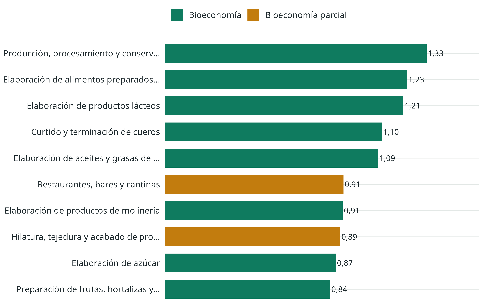
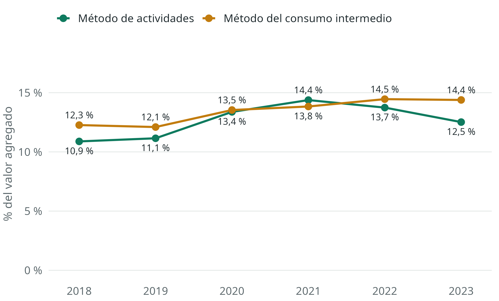

Qué dice la cuenta de bioeconomía de Argentina y qué cursos de acción abre
Economista / Analista de datos
16,8 % de la producción, y 12,8 % del valor agregado por el método de actividades
44,3 % de las exportaciones de bienes y servicios
13,1 % de tasa implícita sobre los productos bioeconómicos, frente a 8,1 % de los demás
6,2 % de la formación bruta de capital se registra en productos bioeconómicos
Mensaje central. La bioeconomía sostiene buena parte de las divisas y de la recaudación de Argentina con una base concentrada de productos. Pesa más de lo que indica su producción, y la discusión de política está en cómo tributa, cómo se diversifica y de qué insumos depende.
Argentina, 2023, precios corrientes. Elaboración propia con datos de Instituto Nacional de Estadística y Censos (s.f.) y el método de Vargas et al. (2023).
Seis resultados de la cuenta de bioeconomía de Argentina.

Argentina, 2023. Participación de cada condición en cada agregado.
Saldo comercial por condición del producto

75,1 % de las exportaciones bioeconómicas provienen de cinco productos.
Principales exportaciones bioeconómicas

Miles de millones de pesos, 2023.

Saldo comercial como porcentaje del PIB.

Participación en las exportaciones bioeconómicas.
El superávit bioeconómico pasó de 9,5 % del PIB en 2021 a 4,3 % en 2023. Cinco productos concentran entre 71 % y 82 % de las exportaciones bioeconómicas en todo el periodo.

La brecha persiste en los 6 años. La tasa bioeconómica es 1,6 veces la del resto.
Parte es tabaco y bebidas: aportan 25,9 % de lo recaudado en productos bioeconómicos. Sin ellos, la tasa baja a 10,4 %, y sigue por encima del resto.
La tasa resume en un resultado neto instrumentos creados con fines diversos. El COU no los separa (Vargas et al., 2023).

Productos con más de 1 % de las exportaciones bioeconómicas, más tabaco y bebidas. Impuestos netos entre valor bruto de producción. Hipótesis por verificar: que en los productos de exportación pesen los derechos de exportación (ver curso 1).

22,2 % del valor agregado está en actividades con uso de insumos bioeconómicos superior a la mediana más una DAM
2,48 vs. 2,03 multiplicador de demanda promedio: actividades bioeconómicas y fuera de la bioeconomía
Multiplicadores de uso total, por peso de demanda final. Son útiles para comparar actividades. Su nivel está sobrestimado porque no separan importaciones.
28,4 % de la oferta a precios básicos de abonos y plaguicidas, un producto de bioeconomía parcial, es importada (613 de 2.162 miles de millones)
-2.814 miles de millones: saldo comercial de los productos de bioeconomía parcial, donde sí hay déficit
Mayores importaciones de bioeconomía parcial
| Producto | Importaciones | Producción | % importado |
|---|---|---|---|
| Productos farmacéuticos | 990 | 2.945 | 25,2 % |
| Productos químicos orgánicos básicos | 789 | 1.227 | 39,1 % |
| Abonos y plaguicidas | 613 | 1.549 | 28,4 % |
| Productos químicos n.c.p. | 350 | 609 | 36,5 % |
| Pasta de papel, papel y cartón | 319 | 2.711 | 10,5 % |
| Jabón, preparados para limpiar, p... | 228 | 1.925 | 10,6 % |
Miles de millones de pesos, 2023. El vínculo de estos productos con los recursos biológicos es menos directo, y conviene revisarlo producto por producto.

En 4 de los 6 años, el método del consumo intermedio da más que el de actividades, como se esperaba en 10 de 13 países (Vargas et al., 2023). Se invierte en 2020 y 2021.
En 2023, con la sequía, cae el método de actividades (14,1 % a 12,8 %), pero el del consumo intermedio casi no cambia. Los cuadros están a precios corrientes, de modo que las participaciones no aíslan volúmenes.
Opciones para discutir, a partir de los datos. Todas requieren contrastarse con la normativa y la evidencia sectorial vigentes.
Diez principios voluntarios acordados en 2024 (Iniciativa do G20 sobre Bioeconomia, 2024). La bioeconomía debe:
1 Contribuir al desarrollo sostenible y a erradicar el hambre y la pobreza
2 Ser inclusiva y equitativa, con pueblos indígenas y comunidades locales
3 Impulsar la mitigación y la adaptación al cambio climático
4 Conservar la biodiversidad y repartir sus beneficios con justicia
5 Usar los recursos biológicos de forma eficiente y circular
6 Basarse en ciencia, tecnología e innovación, con riesgos evaluados
7 Apoyarse en marcos de política robustos y coherentes
8 Medirse con metodologías transparentes, comparables y medibles
9 Contar con cooperación internacional y financiamiento
10 Responder a las prioridades y circunstancias de cada país
Una advertencia. “La bioeconomía no es intrínsecamente sostenible”: puede competir con los alimentos y presionar los suelos si no se acompaña de incentivos a prácticas sostenibles (Diakosavvas y Frezal, 2019).
1. Coherencia fiscal
Revisar cómo tributan los productos bioeconómicos y qué objetivo cumple cada instrumento.
2. Diversificación y circularidad
Reducir la concentración, exportar más valor por unidad de biomasa y aprovechar residuos.
3. Insumos y bioinsumos
Reducir la exposición a abonos y plaguicidas importados.
4. Encadenamientos
Priorizar las actividades con mayor arrastre, dentro y fuera del agro.
5. Inversión e innovación
Hacer visible y financiar el capital bioeconómico, incluido el conocimiento.
6. Sistema de información
Convertir este ejercicio en una cuenta regular, con empleo y datos físicos.
El dato. Tasa implícita de 13,1 % frente a 8,1 %. Los productos bioeconómicos aportan 23,8 % de los impuestos netos sobre los productos, frente a 32,9 % en 2021.
Una prueba natural. Los derechos de exportación son impuestos sobre los productos en el SCN. El cronograma para la soja los baja de 24 % en 2026 a 21 % a fines de 2027 y 15 % desde fines de 2028 (Hoy Día, 2026). Si pesan en la tasa, debería verse en los COU de esos años.
Opciones
Tensión
Una reducción general afecta la recaudación. La pregunta útil es dónde rinde más cada peso que se deja de cobrar. El principio 7 del G20 pide coherencia entre esos objetivos.
Indicador
Tasa implícita por producto y por instrumento, año a año.
El dato. Cinco productos concentran 75,1 % de las exportaciones bioeconómicas, que aportan 44,3 % de las exportaciones del país. Con la sequía, el superávit bioeconómico cayó a 4,3 % del PIB en 2023.
La pregunta. ¿Cómo reducir la exposición a precios y clima, y aprovechar mejor la misma biomasa, incluidos sus residuos?
Opciones
Tensión
Procesar más localmente exige energía, logística y escala. Cada cadena necesita su propio análisis, según las condiciones de cada país (Rodríguez et al., 2019).
Indicador
Concentración de exportaciones, valor agregado por peso producido y una cuenta de biomasa residual.
El dato. Se importa 28,4 % de la oferta de abonos y plaguicidas, a precios básicos. La agricultura destina 45,8 % de su consumo intermedio a productos bioeconómicos.
Lo que ya existe. Plan de acción para los bioinsumos (2020), PROBIAAR (2021) (Ministerio de Agricultura, Ganadería y Pesca, 2021), registro en el SENASA (2023) (Servicio Nacional de Sanidad y Calidad Agroalimentaria, 2023) y una definición común en el Mercosur (2026).
Opciones
Tensión
El COU agrupa plaguicidas biológicos y de síntesis en una sola fila: hoy el éxito de esta política sería invisible en la cuenta. Y la sustitución solo vale si mantiene los rendimientos.
Indicador
Porcentaje importado por insumo, con una fila separada para los bioinsumos.
El dato. 32 actividades tienen dependencia muy alta de insumos bioeconómicos, entre ellas carne, lácteos, alimentos para animales, cueros y restaurantes.
La pregunta. ¿Dónde tiene mayor efecto un peso adicional de demanda, y quién lo recibe?
Opciones
Tensión
Un multiplicador alto no implica eficiencia ni sostenibilidad ambiental. Los principios 1 y 3 del G20 piden mirar también empleo y clima.
Indicador
Multiplicador de uso nacional, empleo y emisiones por actividad, cuando se disponga de esos datos.
El dato. Solo 6,2 % de la formación bruta de capital corresponde a productos bioeconómicos, frente a 16,8 % de la producción.
Lectura cuidadosa. La cifra está medida por tipo de bien de capital. No muestra toda la inversión que realizan las empresas de la bioeconomía, y la propiedad intelectual se registra mal (Vargas et al., 2023).
Opciones
Tensión
Los plazos de maduración son largos y los resultados, inciertos. El principio 6 del G20 pide evaluar con ciencia beneficios y riesgos.
Indicador
Inversión e I+D de las actividades bioeconómicas.
El dato. Argentina ya publica los COU que permiten esta cuenta. Con una rutina reproducible se procesaron 6 años en una sola base, y la herramienta deja que cualquiera ponga a prueba la clasificación.
La pregunta. ¿Quién la mantiene, con qué frecuencia y con qué datos adicionales? La OCDE advierte que sin una definición acordada es difícil fijar objetivos y evaluar políticas (Diakosavvas y Frezal, 2019).
Opciones
Tensión
Más detalle exige más recursos. Conviene empezar por lo que ya existe. El principio 8 del G20 pide metodologías transparentes y comparables.
Indicador
Una cuenta anual publicada y citada en decisiones de política.
| Curso | Dato de la cuenta | Principio G20 | Horizonte | Costo fiscal | Actores clave |
|---|---|---|---|---|---|
| 1. Coherencia fiscal | 13,1 % | 7 | Corto a mediano | Alto | Hacienda, sectores |
| 2. Diversificación y circularidad | 75,1 % | 5 y 10 | Mediano a largo | Medio | Producción, cancillería |
| 3. Insumos y bioinsumos | 28,4 % | 5 y 6 | Mediano | Medio | Agricultura, SENASA, ciencia |
| 4. Encadenamientos | 32 actividades | 1 y 3 | Mediano | Medio | Producción, provincias |
| 5. Inversión e innovación | 6,2 % | 6 | Largo | Medio a alto | Ciencia, banca pública |
| 6. Sistema de información | 6 años | 8 | Corto | Bajo | INDEC, ministerios |
Valoración cualitativa, propuesta como punto de partida para la discusión. Principios del G20 sobre bioeconomía (Iniciativa do G20 sobre Bioeconomia, 2024).
1. Elijan un curso. Con la herramienta o la base en Excel, busquen tres cifras que lo respalden y una que lo cuestione.
2. Identifiquen ganadores y perdedores. ¿Qué sector, región o grupo gana? ¿Quién paga?
3. Decidan qué falta. ¿Qué dato fuera del COU necesitarían antes de recomendarlo? ¿Qué principio del G20 queda sin cubrir?
4. Propongan un indicador. Uno solo, medible cada año, para saber si la política funciona.
Abrir la herramienta de bioeconomía · Descargar la base de datos · Descargar los cuadros
Causalidad. Son identidades contables que muestran la estructura de un año. Medir el efecto de una política requiere otro diseño.
Volúmenes. Están a precios corrientes, en un periodo de alta inflación y cambios de precios relativos.
Empleo y ambiente. El COU no los incluye. Una bioeconomía grande no es por sí misma una bioeconomía sostenible (Diakosavvas y Frezal, 2019).
Clasificación. Los resultados dependen de qué se considera bioeconómico, sobre todo en químicos, farmacéuticos y textiles.
Gracias
De los hallazgos a la política pública